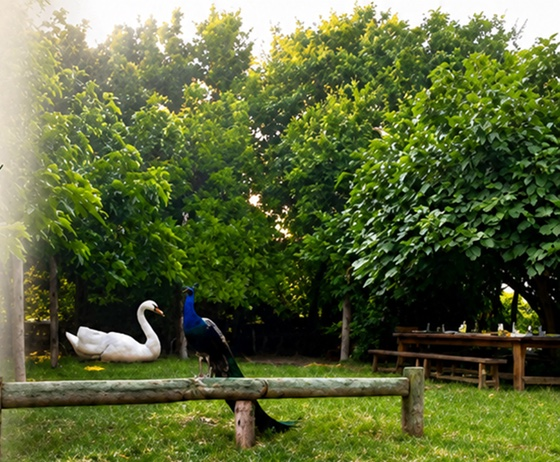

个人驻留
“我来推进自己的项目”
在5套公寓中个人驻留。
可直接预订。
莱里达奥尔塔的一处栖所，
用来聆听、创作和存在。
我们生活在一个走得太快的世界。有时，我们需要的只是时间和安静。
Amics de la Natura 协会敞开 Les Vaqueres 的大门——一个为专注、创造力和身心安宁而设的地方，就在大自然之中。
五套温馨的独立公寓（其中一套完全无障碍），坐落在莱里达奥尔塔宁静的风景里，傍晚的光线和土地的节奏在这里定下节拍。

这里就是您的地方。
一个休息的地方。
让心灵喘口气。
一个有大自然陪伴的地方。
请艺术家：
艺术家展示最终成果的一部分。
艺术家不必带着完成的作品前来。
目的是把驻留与奥尔塔及其周围的土地联系起来。
日常生活也是驻留的一部分。共享的房子让您既有自己的空间，又能与其他人保持联系。

每位艺术家都可以专注于自己的项目，也可以选择与其他驻留者分享部分创作过程。
因此，有意愿的驻留艺术家可以提议与自己创作相关的活动、聚会或工作坊，也可以向当地的艺术家和居民开放。
“我来推进自己的项目”
在5套公寓中个人驻留。
可直接预订。
“我来和一群有共同主题、领域或挑战的创作者一起推进自己的项目”
一个共同创作的空间：他们一起组成为期一周的小小创作生态系统。
5位艺术家 · 不同领域 · 一个地方 · 一段时间
例如：创作周 · 身体、空间与影像。参与者可以是：
每个人推进自己的项目，但共享日常生活和公共空间。没有固定主题：丰富性恰恰来自多样性。
围绕一条共同主线的多个专业：5位驻留者，每人在同一主题下各有专长。
例如：戏剧周 · “从构想到舞台”
由一位驻留者主导并协调这一周。
例如，一位戏剧导演可以提议：
“我想用一周时间研究一个角色是如何塑造出来的”
她可以邀请或推荐不同领域的人：
例如：摄影周末。
例如：乡间写作周。可接待6到10位参与者，外加一位艺术家或作家。

工作坊由艺术家本人提议并带领。
更多照片和地点请见参考书目（在新标签页中打开）页面。
暗箱是一种光学装置，能把外部景象倒转投射到封闭空间里；而照片冲洗则是让这个影像显现并固定下来的化学过程。
我们的暗箱设在一辆面包车里，车里也配备了冲洗照片的设施。
项目的理念与特色
协会推广一种文化性、创造性的模式。这是一个包含驻留的文化项目。我们不出租公寓。我们提供一个可以生活、创作和分享一段时间的地方。
通过“艺术家驻留”项目，人们可以以不同方式加入，并缴纳一份费用，参与项目并帮助维持这个地方。
关于费用，有一点很重要：作为非营利协会，并不意味着不需要财务上可持续。恰恰相反。收入必须足以支付维护、维修、清洁、保险、水电、管理、宣传、设备更新等开支。
任何结余都不会分给所有者，而是重新投入到项目中。